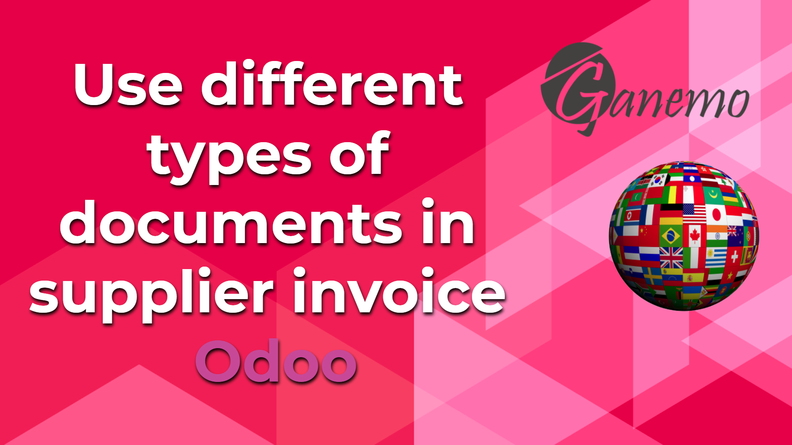
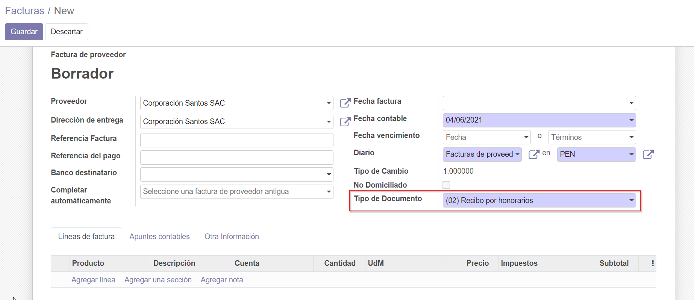

<section class="oe_container oe_dark">
    <div class="row">
        <div class="col-sm-12">
            
        </div>
        <div class="oe_span8">
            <span>Configure in each type of document, the purchase journal with which this type of document can be used. It is very
            useful for countries where different types of tax documents are distinguished, as is the case in many Latin American countries.</span>
        </div>
        <div class="col-sm-12">
             
        </div>
    </div>
</section>